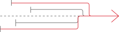
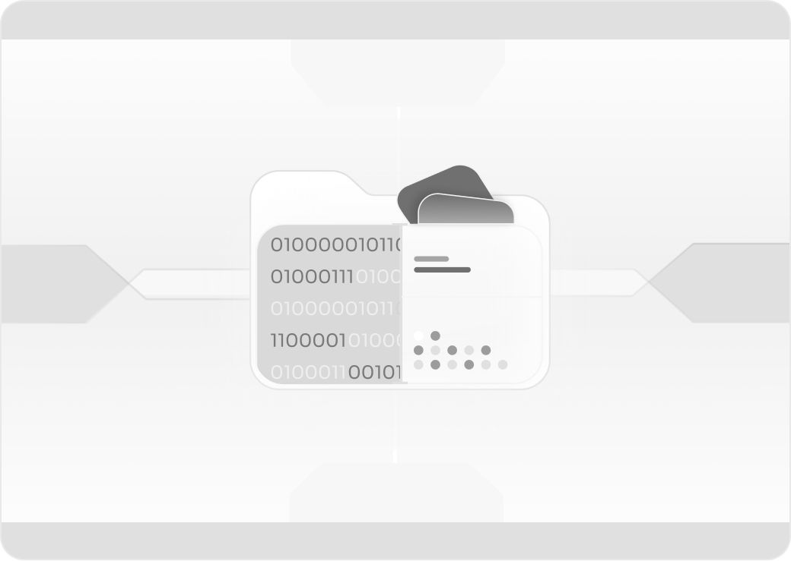
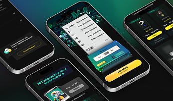

Dedicated Lab
Cyberk and the client collaboratively form a long-term development team
Our Dedicated Lab model gives you a stable, high-performing team that integrates deeply with your business — scaling up or down as your needs evolve.
No recruiting headaches, no ramp-up delays. Just a reliable engineering team that understands your product and delivers consistently.
CONTACT US →
Is This Right for You?
Companies with ongoing development
You have a product in market and need continuous feature development, maintenance, and scaling — not just a one-off build.
Businesses seeking stable teams
You want a dedicated team that understands your product deeply, maintains institutional knowledge, and delivers predictable velocity.
Teams reducing hiring risks
You need to scale your engineering capacity fast without the risk, cost, and time of traditional hiring — especially for specialized Web3/AI talent.
Goals & Benefits
Rapid Team Scaling
Scale from 3 to 12+ engineers in days, not months. Our bench of pre-vetted talent means you never wait for the right people.
Cost Efficiency
Save 30-40% compared to building an equivalent in-house team — no recruitment fees, benefits overhead, or office costs.
Deep Product Knowledge
Your dedicated team builds institutional knowledge over time, leading to faster feature delivery and fewer context-switching losses.
Predictable Delivery
Stable teams deliver predictable velocity. No onboarding cycles, no knowledge loss from turnover — just consistent output sprint over sprint.

Our Approach
How the Dedicated Lab Works
We work as an extension of your team — not just an outsourced vendor. Our engineers participate in your standups, follow your processes, and share your goals. The relationship is built on transparency, shared accountability, and long-term commitment to your product's success.

Notable Case Studies
Revenue Increased
5000%
faster revenue ramp from earlier launch + user adoption

Workflow
30-40%
faster workflow with dedicated team integration.

On-Time Delivery
95%
of projects shipped on time and within scope.